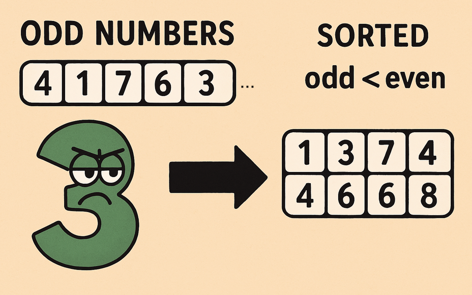

You've always found odd numbers a bit strange — perhaps even inferior. But today, you're giving them a special place.
You have a list of numbers you need to sort, but with a twist: odd numbers should be treated as smaller than even numbers.
The first line of input contains an integer n (1 ≤ n ≤ 500) — the number of integers in the sequence.
The second line contains the sequence of n integers separated by spaces. Each integer is between 1 and 100,000, inclusive.
Print one line with the n integers sorted according to the rules described above, separated by spaces.
6 3 10 2 5 2 8
3 5 2 2 8 10
6 5 10 4 10 1 10
1 5 4 10 10 10
Content by Fernando Silva and Vanessa Silva (DCC/FCUP), copied from the original website.